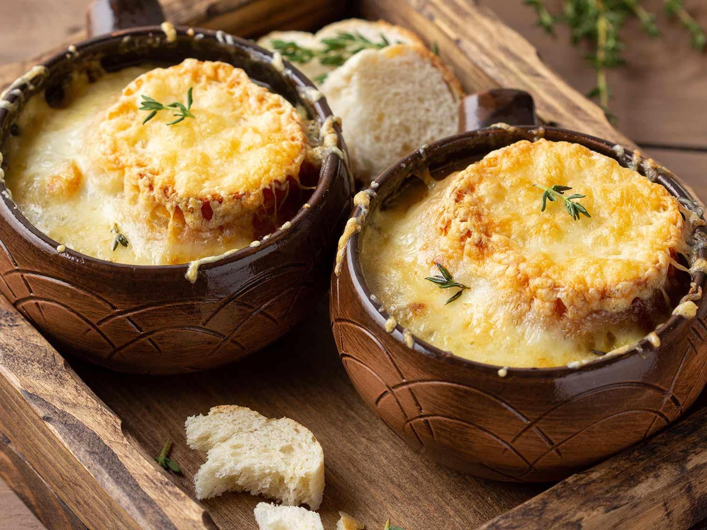

Soupe à l'oignon

Un potage français réconfortant, garni de tranches de baguette grillées et de fromage fondu.
La soupe à l'oignon est une délicieuse spécialité française composée d'oignons finement tranchés cuits lentement dans un mélange de beurre et d'huile jusqu'à ce qu'ils caramélisent, créant une base riche et savoureuse. Ces oignons caramélisés sont ensuite mijotés dans un bouillon de bœuf parfumé, ce qui ajoute des notes de saveur profonde au potage. Le plat est souvent gratiné avec des tranches de baguette grillées et du fromage fondu, créant ainsi une couche dorée et délicieuse sur le dessus. La soupe à l'oignon est un mélange parfait de douceur, de richesse et de chaleur, en faisant une option réconfortante et savoureuse, particulièrement appréciée par temps froid.
Ingrédients
- 4 oignons moyens, tranchés finement
- 2 cuillères à soupe de beurre
- 2 cuillères à soupe d'huile d'olive
- 1 cuillère à café de sucre
- 8 tasses de bouillon de bœuf
- 1/2 tasse de vin blanc sec (facultatif)
- Sel et poivre, au goût
- Tranches de baguette
- Fromage râpé (Gruyère ou Emmental)
Étapes de préparation
- Dans une grande casserole, faites fondre le beurre et l'huile à feu moyen.
- Ajoutez les oignons tranchés et saupoudrez de sucre pour les aider à caraméliser. Faites cuire lentement les oignons jusqu'à ce qu'ils deviennent tendres et dorés, cela peut prendre environ 30 à 40 minutes.
- Versez le vin blanc sec dans la casserole pour déglacer, en raclant le fond pour récupérer les saveurs.
- Ajoutez le bouillon de bœuf dans la casserole et portez à ébullition. Réduisez ensuite le feu et laissez mijoter pendant environ 30 minutes.
- Préchauffez le gril du four.
- Placez des tranches de baguette sur une plaque de cuisson et saupoudrez de fromage râpé.
- Faites griller les tranches de baguette jusqu'à ce que le fromage soit fondu et doré.
- Servez la soupe à l'oignon bien chaude, en plaçant une ou plusieurs tranches de baguette grillée au fromage sur le dessus de chaque portion.
Retour à la page principale